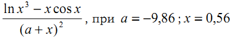

Dmytro Varchuk Software Engineering 31 2variant
Завдання №1. Обчислити значення виразу

2.Визначити, чи є задане натуральне число паліндромом, тобто таким, що його десятковий запис читається однаково зліва на право і справа наліво.
3.Знайти найбільший елемент в одновимірному числовому масиві.
4.Вивести на друк мінімальний елемент масиву та його індекс.
5.Знайти суму додатних елементів одновимірних масивів E(7) та F(7)
6.Дано два рядки. Надрукувати результат рівності перших n символів.